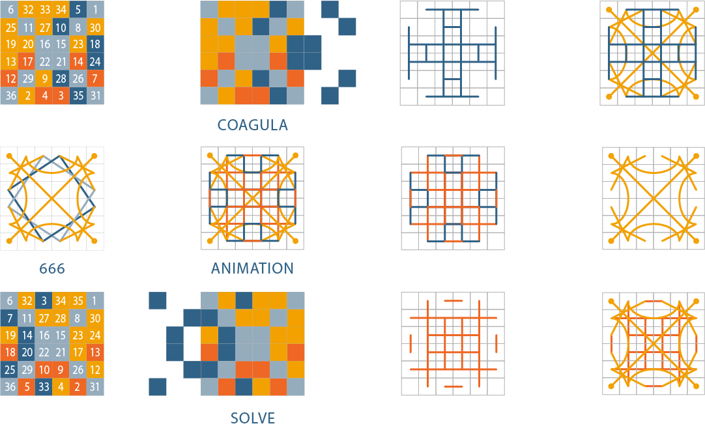
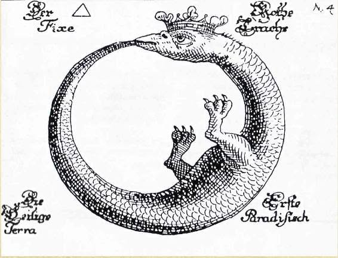
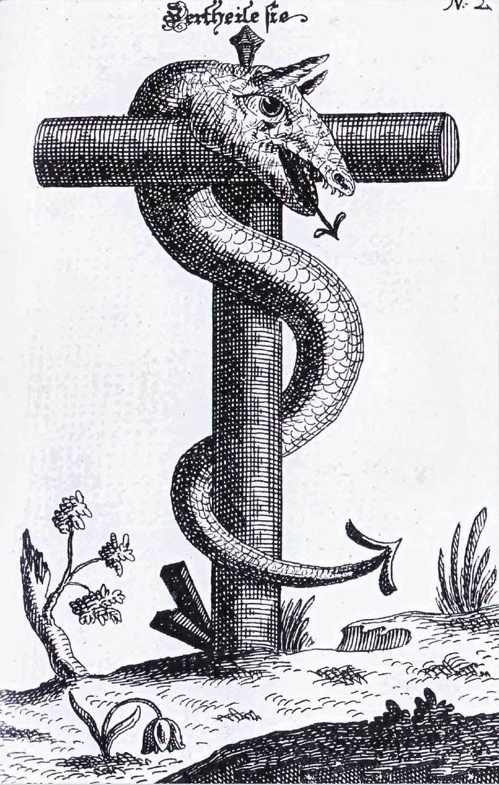
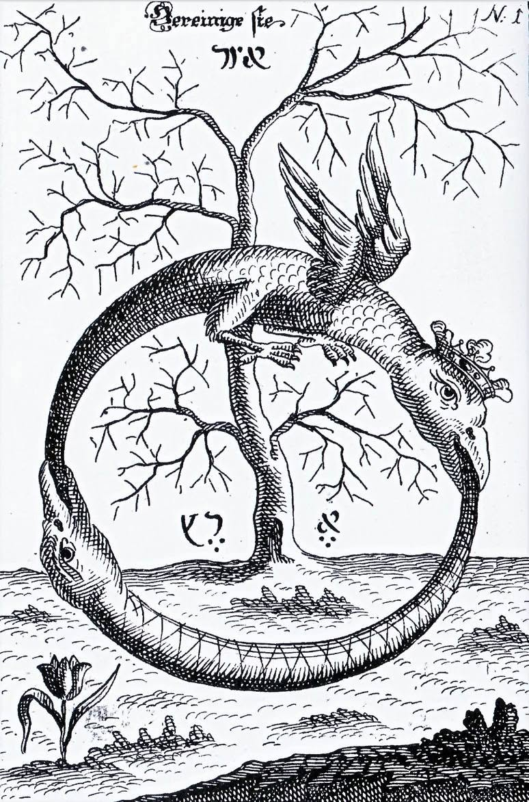
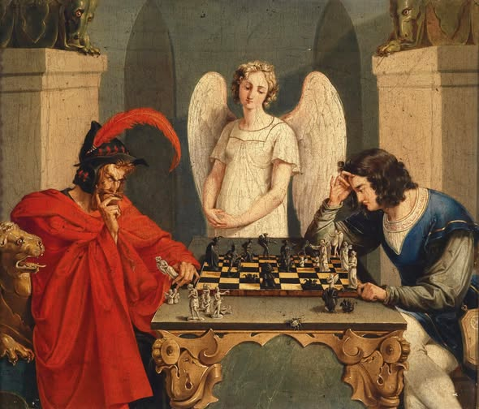

Verticalité, damier, mosaïque et échiquier
Par Anibal Edelberto Amiot — Publié le 3 septembre 2026
Un axe vertical revient sans cesse dans le vocabulaire que ce projet engage — la tige du caducée, le gnomon pythagoricien, la marotte du bouffon. Il vaut la peine de s'arrêter sur cet axe pour lui-même.
L'échiquier
Ce nombre, 64, apparaît ailleurs dans ce projet par une voie entièrement indépendante. Le chapitre consacré à la transcription en hexagrammes du Yi King regroupe les 256 coloriages admissibles de la croix ansée d'ordre 6 en 64 carrés magiques d'ordre 12 — un regroupement vérifié exhaustivement, carré par carré. Le livre présente ce résultat sous la forme visuelle de deux échiquiers : l'un de 8×8 cases portant chacune un carré d'ordre 12, l'autre de 16×16 cases portant chacune un carré d'ordre 6 — 64 d'un côté, 256 de l'autre, disposés côte à côte comme deux grilles de jeu.
Que les 256 coloriages admissibles de la croix ansée se regroupent en exactement 64 carrés magiques d'ordre 12 n'est pas une coïncidence : c'est une conséquence directe et vérifiée de la construction elle-même (chaque carré d'ordre 12 regroupe très exactement 4 coloriages d'ordre 6, donc 256 ÷ 4 = 64, mécaniquement, sans exception). Le rapprochement avec le Yi King, en revanche, dépasse la simple coïncidence de compte : les 64 hexagrammes ont été disposés, traditionnellement depuis l'Antiquité et sous l'autorité légendaire de Fuxi, sous la forme d'un tableau carré de 8×8 — un véritable échiquier, pas seulement soixante-quatre objets qui s'y prêteraient après coup. C'est ce même tableau carré, retrouvé bien plus tard, qui stupéfia Leibniz en y reconnaissant sa propre numération binaire déjà présente. Que ce nombre, 64, soit aussi celui des cases d'un échiquier de jeu d'échecs tient moins de la coïncidence que de l'arithmétique pure : 64 est un carré parfait (8²), et c'est la seule façon de disposer soixante-quatre éléments en un carré régulier. L'échiquier n'invente donc rien à cet égard — il illustre, comme le tableau de Fuxi, la seule forme carrée possible pour ce nombre, pas un choix qui aurait pu tomber ailleurs.


La verticalité comme structure, pas seulement comme image
Il y a plus qu'une coïncidence de nombre dans cet échiquier : il y a une verticalité qui y agit comme principe de construction, et pas seulement comme métaphore. Le classement dit « chronologique » des 64 hexagrammes, tel que le pratique ce projet, attribue au trigramme supérieur les poids binaires les plus lourds (32, 16, 8) et au trigramme inférieur les poids les plus légers (4, 2, 1) — une hiérarchie de valeur qui descend du haut vers le bas de la figure, exactement comme l'axe qui organise la croix ansée fait naître, dans le carré d'ordre 6, une symétrie axiale à partir d'un centre unique.

Ce même passage d'un système à l'autre — la croix ansée devenant hexagramme sans changer de module — est ce que ce projet désigne ailleurs comme une mue du tissu caméléon : ni la perte totale d'une enveloppe, comme la mue du serpent, ni son dédoublement, comme le papillon quittant sa chrysalide, mais un même tissu qui change de teinte sans cesser d'être le même tissu. La hiérarchie verticale qui range les poids binaires du plus lourd au plus léger est précisément le mécanisme de cette mue : c'est elle qui fait passer la figure d'un registre géométrique à un registre binaire, verticalement, sans qu'aucune case ne change de place.
Le papillon lui-même n'est pas absent de ce projet, simplement tenu à distance de la mue proprement dite. Dans Fables de Venise, Hugo Pratt évoque un immense papillon fait d'éclats de verre colorés, qu'il nomme « Aurélia, le papillon gnostique » : la gnose s'y représente elle-même comme une source de sagesse inépuisable, offrant à chacun, en mille reflets, ce qu'il désire voir. Le rapprochement avec le tissu caméléon s'arrête là où commence la différence : Aurélia ne change pas, elle réfléchit — chacun de ses éclats renvoie une couleur propre au regardeur, alors que la mue, elle, change réellement de teinte sans changer de tissu.
L'étymologie chinoise du titre même du texte transcrit rejoint, sans qu'on l'ait cherché, cette même image. Le caractère yi (易) est couramment interprété — l'origine reste discutée — comme représentant à l'origine un caméléon, animal qui change d'apparence sans changer de nature. Le caractère jing (經), rendu ici par « king », désigne quant à lui le fil de chaîne d'un tissu, celui qui structure l'étoffe avant que la trame ne le croise, et c'est de ce fil tendu que vient le sens dérivé de « classique », un texte qui tient comme une chaîne tient un tissu. Le titre Yi King porterait ainsi, dans ses deux caractères, le caméléon et le tissu — la mue et la chaîne — avant même que ce projet ne les réunisse à son tour.
Un troisième écho vient s'ajouter à cette paire — le papillon d'Aurélia, la mue du tissu caméléon — sans qu'on ait eu à le forcer : l'habit bariolé d'Arlequin. L'article consacré à Hanuman présente déjà cette figure comme l'incarnation occidentale la plus connue du messager en livrée bariolée : selon Thelma Niklaus (citée par Richard Stamelman), Arlequin porterait, sous une forme théâtrale, « la propre livrée de Mercure », l'habit multicolore signalant à la fois la protection du dieu et l'instabilité de tempérament de ceux qui la portent — et il tient un bâton comme Mercure tenait le caducée. Françoise Dininman, dans sa lecture du poème « Crépuscule » de Guillaume Apollinaire (« Naissance de "Crépuscule" ou les tours de Mercure »), identifie explicitement l'Arlequin du poème à Hermès et le qualifie d'axis mundi — un lien entre terre et ciel, tenu sur l'axe zénith-nadir qui structure tout le texte. Elle lit les tréteaux du poème comme un temenos, une enceinte sacrée, sur laquelle se joue cet axe. Le costume d'Arlequin lui-même, en losanges multicolores, n'est jamais qu'un carré magique pivoté de 45° — le même damier, vu de biais : une troisième forme, avec le papillon et la mue, où ce projet retrouve sa propre géométrie déjà déguisée en autre chose.

Le Yi King lui-même donne à cette discrimination du haut et du bas une formulation presque littérale. Le jugement de l'hexagramme 10 (履, Lǚ, « la Marche ») fait remarquer que « l'homme supérieur discerne le haut du bas », et que ce discernement même fortifie la détermination du peuple — une phrase qui pourrait servir d'épigraphe à cet article tout entier, écrite des siècles avant que ce projet n'en fasse un principe de construction.
Baphomet porte cette même verticalité inscrite dans son propre corps. Le geste que lui donne Éliphas Lévi — un bras levé portant l'inscription Solve, l'autre abaissé portant Coagula — reprend le geste du Bateleur au tarot, une main tendue vers le ciel, l'autre vers la terre : le même axe qui organise l'échiquier et le caducée. Ce même vocabulaire, Solve et Coagula, nomme aussi, dans ce projet, les deux lectures de la croix ansée dont les carrés sommant à 666 encodent, chacun à sa façon, la symétrie du serpent.

Son aspect mosaïque tient à sa construction même : une tête de bouc, un corps androgyne, un caducée posé devant le bas-ventre, une torche au sommet du crâne — quatre pièces d'origines distinctes assemblées en une seule figure, comme les cases d'un carré magique assemblent des couleurs distinctes en une seule surface. La tête de bouc porte l'allusion la plus directe possible au chiffre de la bête ; le caducée reprend, sur le corps même de la figure, l'axe vertical qui traverse tout cet article.
Le caducée que porte Baphomet renvoie, en retour, au caducée de ce projet lui-même. Sa verge verticale n'est pas un simple support pour les deux serpents entrelacés : c'est elle qui rend leur enroulement commensurable, au sens premier de la symmetria — un module partagé, ici purement vertical, à partir duquel les deux courbes opposées se mesurent l'une à l'autre plutôt que de simplement se croiser.
Le serpent mosaïque
Le serpent lui-même porte, dans ses écailles, la même mosaïque que le damier et l'échiquier. L'Ouroboros, ce serpent qui se mord la queue, est décrit dans la tradition alchimique comme un être androgyne né de la fusion de deux serpents antinomiques — une parenté qui le relie directement au caducée, attribut du messager divin grec, autour d'une même question : comment accorder, en une seule surface, des écailles absolument opposées ? C'est très exactement la question de la symmetria, déjà rencontrée à propos de la verge de Baphomet, posée cette fois à même la peau du serpent.



Trois planches du Donum Dei (Erfurt, 1735) — domaine public. La deuxième montre un serpent unique enroulé sur un pieu en croix, une figure proche du caducée réduite à un seul corps.
Un traité allemand de 1735, le Donum Dei, répond à cette question en image plutôt qu'en formule : deux dragons — l'un couronné et ailé, l'autre nu — s'enroulent chacun sur eux-mêmes avant que l'un ne dévore l'autre pour ne former qu'un seul être, « le fixe le plus fixe qui toute chose transperce ». Le texte biblique connaît une figure voisine, réduite à un unique serpent porté sur un pieu plutôt qu'enroulé sur lui-même : le serpent d'airain que Moïse dresse dans le désert, « afin que quiconque croit ait par lui la vie éternelle » (Jean 3:14-15) — la même verticale qui porte déjà, ailleurs dans ce projet, le pectoral du grand prêtre et son écheveau de sens autour du mot hébreu pour « serpent ».
Sur les deux échiquiers du chapitre consacré à cette transcription — celui de 64 carrés d'ordre 12, celui de 256 carrés d'ordre 6 — cette verticalité interne est ce qui permet le classement : ce n'est pas un simple pavage décoratif, c'est un axe de lecture, du haut vers le bas de chaque figure, qui ordonne la totalité de la grille.
Une chaîne d'instruments verticaux
Avant de suivre cette chaîne, il faut dire ce qu'est le pavé mosaïque lui-même, puisque le titre de cet article le nomme sans encore l'avoir présenté. C'est le dallage qui occupe le centre d'une loge maçonnique : des cases noires et blanches alternées, dont le nombre varie selon les rites. Le noir et le blanc n'y sont pas des couleurs mais des valeurs — la réunion de toute lumière, son absence — et le pavé figure ainsi la dualité du monde manifesté, tenue en un seul sol plutôt que résolue. Il fait pendant, dans l'architecture de la loge, à la voûte étoilée qui orne le plafond : le damier est le monde d'en bas, différencié ; la voûte est le monde d'en haut, un. C'est un damier qui reste fixe dans sa dualité — le noir y reste noir, le blanc y reste blanc, d'un bout à l'autre du sol — à la différence de l'échiquier de ce projet, où la même case change de valeur selon l'axe vertical qui la lit.
Ce noir et ce blanc sont déjà, sans qu'on ait besoin d'y ajouter quoi que ce soit, une paire binaire — la même opposition à deux termes que celle des traits pleins et brisés du Yi King, yang et yin, 1 et 0. En ce sens, le pavé mosaïque fait écho, à sa manière statique, aux mues binaires du tissu caméléon rencontrées plus haut : les deux systèmes reposent sur une alternance à deux valeurs, l'un figé case après case dans l'espace, l'autre glissant d'un registre à l'autre le long de l'axe vertical. Le damier et la mue disent, chacun dans son propre médium, la même arithmétique de base deux.
Ce même chapitre fait suivre l'axe d'une chaîne de termes, présentés les uns sous les autres comme les barreaux d'une même échelle : axe, verticalité, fil à plomb, angle droit et carré, Pythagore, Saturne — le temps —, pendule, échiquier. C'est une progression propre à ce projet, pas une filiation attestée par une source tierce, mais chacun des maillons pris séparément est solidement ancré.
Le fil à plomb et l'équerre sont les outils mêmes par lesquels un maçon matérialise la verticale et l'angle droit sur un chantier — les deux instruments qui donnent au pavé mosaïque sa rectitude avant que le symbolisme ne s'en empare. Pythagore, dont le gnomon est apparu plus haut, fournit le théorème qui relie l'angle droit à la mesure. Saturne, dans l'astrologie et l'alchimie classiques, est la planète du temps, du plomb et de la pesanteur — la plus lente, la plus lourde, celle qui gouverne la chute et donc la direction même que le fil à plomb rend visible. Le pendule n'est jamais que ce même fil à plomb mis en mouvement : une masse qui oscille de part et d'autre d'un axe vertical fixe, et qui, réglé, devient un instrument de mesure du temps — refermant la boucle jusqu'à Saturne. L'échiquier, enfin, referme la chaîne sur lui-même : c'est la grille où cette verticalité, une fois établie, vient s'inscrire et se classer.
Lue ainsi, la chaîne ne fait qu'expliciter, outil par outil, ce que l'article a montré sous forme d'image : le même axe que génèrent les croix ansées porte aussi, très concrètement, le fil à plomb du bâtisseur et le pendule de l'horloger.
L'échiquier comme tamis
Il reste à dire comment cette verticalité, une fois établie, se rend visible dans l'échiquier lui-même plutôt que de rester une image surajoutée. Le temenos de Dininman, présenté plus haut à propos d'Arlequin, en offre le modèle : l'échiquier de ce projet fonctionne de la même manière — un temenos à l'intérieur duquel un second temenos se love, case après case, et où le classement chronologique des figures agit comme un tamis — un instrument qui retient une forme et laisse passer les autres, révélant par ce tri la même verticalité qui organise chaque figure prise isolément.
Du chiffre de la bête à la mesure de l'ange

L'Apocalypse de Jean ne qualifie explicitement de « nombre » ou de « mesure d'homme » que deux grandeurs dans tout le livre — les deux seules occurrences de cette expression précise qu'il contienne. La première est bien connue : « c'est le nombre d'un homme, et son nombre est six cent soixante-six » (Apocalypse 13:18) — 666, qui est aussi, indépendamment de toute lecture ésotérique, la constante magique du carré d'ordre 6 de ce projet (6 × 111 = 666). La seconde l'est beaucoup moins : la muraille de la Jérusalem nouvelle mesure « cent quarante-quatre coudées, mesure d'homme, qui est aussi mesure d'ange » (Apocalypse 21:17) — 144, le nombre même qu'obtient ce projet en fusionnant les couleurs rouge et bleu de la croix ansée sur l'ordre 12 (trois formes homogènes de 48 cases : 3 × 48 = 144).
Le texte biblique passe ainsi, par ce doublet rare et par lui seul, du chiffre de la bête à la mesure de l'ange — deux extrémités d'un même axe moral, portées par le même type de nombre. Ce que fait ce projet, c'est faire de ce doublet textuel un doublet géométrique : le passage de 666 à 144 n'est pas un saut arbitraire d'un ordre à un autre, il suit la même hiérarchie verticale décrite plus haut — celle qui range les poids binaires du plus lourd (32, 16, 8) au plus léger (4, 2, 1) — appliquée cette fois au passage de l'ordre 6 à l'ordre 12. Extraire la verticalité du binaire, dans ce projet, c'est cela précisément : faire apparaître, dans le passage d'une constante à l'autre, le même axe que le pavé mosaïque fait apparaître ailleurs par l'image plutôt que par le calcul.
Sources évoquées : Apocalypse 13:18, 21:17 ; Jean 3:14-15 ; symbolisme du pavé mosaïque d'après plusieurs sources maçonniques concordantes ; disposition carrée traditionnelle des 64 hexagrammes attribuée à Fuxi, et son rapprochement avec la numération binaire par Leibniz ; étymologie de 易 (yi, caméléon) et 經 (jing, fil de chaîne) ; Hugo Pratt, Fables de Venise ; T. Niklaus, Harlequin Phoenix, or the Rise and Fall of a Bergamask Rogue (Bodley Head, 1956), citée par Richard Stamelman ; Françoise Dininman, « Naissance de "Crépuscule" ou les tours de Mercure », Que Vlo-Ve, fasc. 6-7 ; jugement de l'hexagramme 10 (履, Lǚ) du Yi King ; gravure de Baphomet, Éliphas Lévi (XIXe siècle, domaine public) ; Donum Dei (Erfurt, 1735), domaine public ; « Checkmate », Friedrich August Moritz Retzsch, 1831 — domaine public.
Pour comprendre les notions évoquées ici — livrée, verticalité — consulte le lexique du projet.